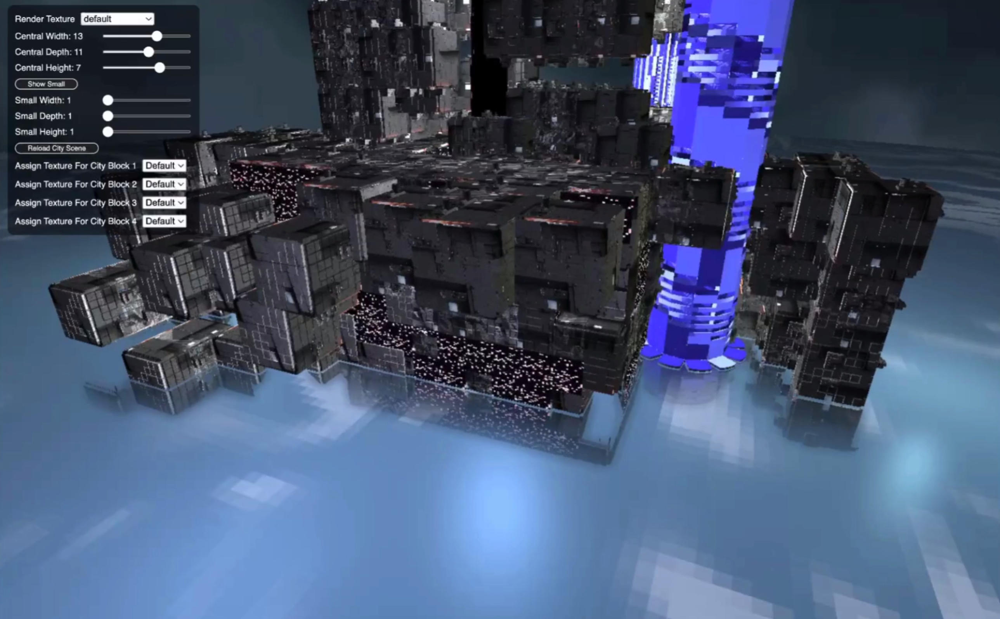
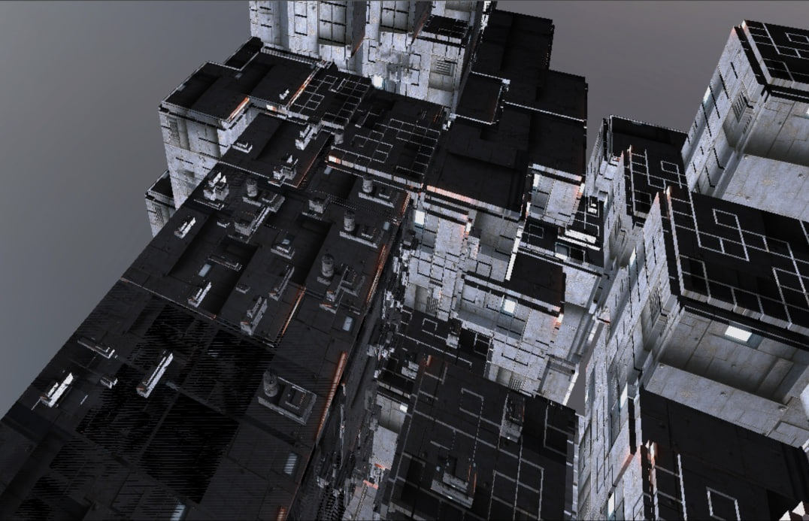
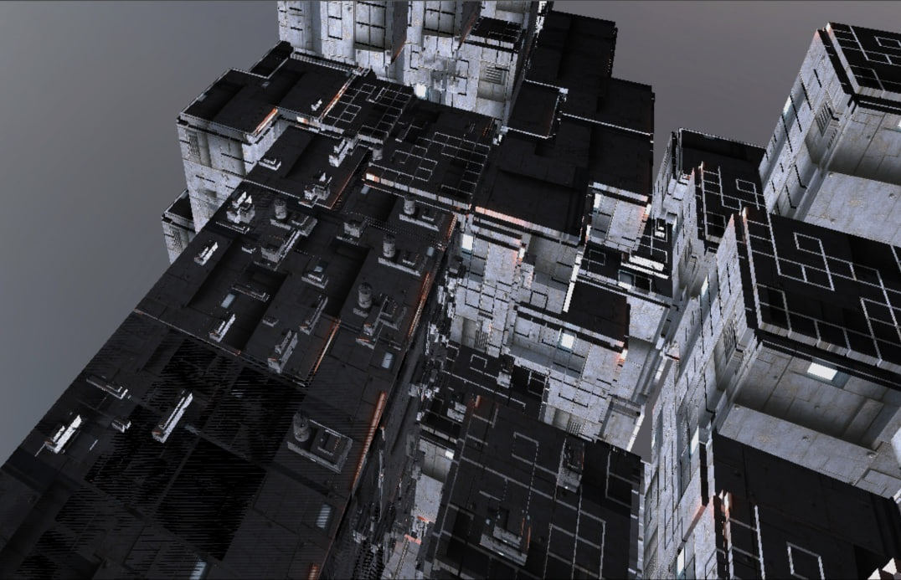
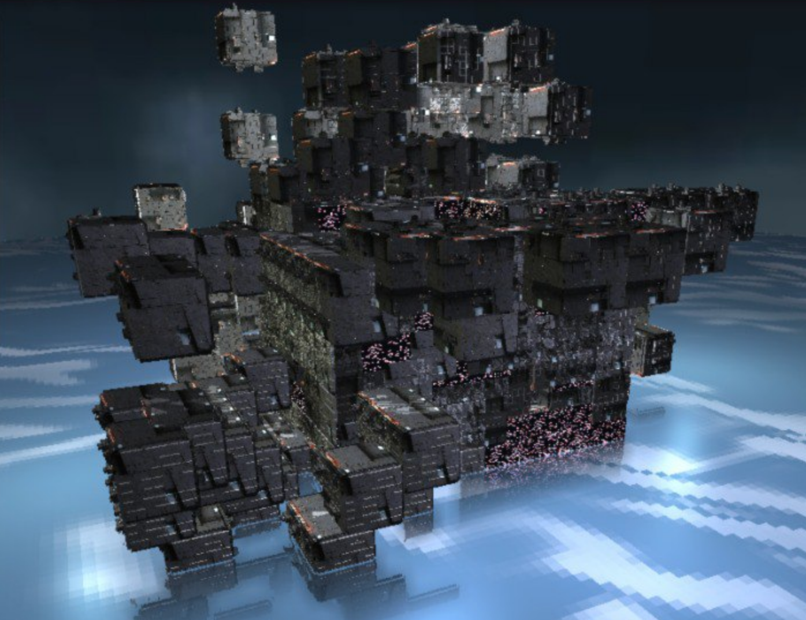

Cyberpunk City: A Dynamically Evolving Urban Landscape
Abstract
This project presents an immersive, ever-evolving cyberpunk city. Key features include stylized 3D buildings via Wave Function Collapse (WFC), realistic water reflections using Screen-Space Reflections (SSR), and animated billboards with dynamic textures and bloom effects. These components combine to create a vibrant, self-evolving urban landscape that draws users into a futuristic cyberpunk world.
NOTE: While the WFC-based building generation runs smoothly across systems, we recommend using a Mac (e.g., MacBook Air with Apple Silicon) for testing the full project. On Nvidia-equipped laptops like the Swift X, applying procedural textures may cause driver instability or GPU overload. This issue does not affect standard WFC generation but may impact performance during procedural texture rendering. Other GPU-equipped Windows laptops have not been tested.
Overview


Our project presents a procedurally generated cyberpunk city powered by WebGL and GLSL shaders. At its core is a custom implementation of the Wave Function Collapse (WFC) algorithm, adapted to generate large-scale, constraint-satisfying 3D city layouts arranged in concentric circular rings. These structures are rendered using efficient instanced meshes to reduce draw calls, while distance-based visibility culling ensures real-time performance remains smooth. To enhance the atmosphere, we developed a suite of animated procedural textures (Worley, Zippy, and Square noise patterns) used to simulate neon billboards, flickering lights, and urban facades with dynamic energy.
In addition to procedural generation, one of the visual cornerstones of the project is our screen-space reflection (SSR) system. SSR simulates real-time planar reflections by ray marching in screen space, allowing reflective surfaces like water to dynamically mirror parts of the scene without the overhead of full environment mapping. This significantly boosts visual realism, especially in a cityscape filled with glowing lights and vibrant textures. We later extended our procedural noise system beyond billboards, applying it directly to some building textures as well. The result is a city that not only evolves in structure but also in motion and light, alive with flickers, glows, and reflections that respond organically to camera movement and time.
Feature validation
| Feature | Adapted Points | Status |
|---|---|---|
| Wave Function Collapse (WFC) | 15 | Completed |
| Runtime-evolving bloom effects on billboards | 5 | Completed |
| Dynamic billboard texture generation with noise | 10 | Completed |
| Screen-Space Reflections (SSR) | 20 | Completed |
Wave Function Collapse (WFC)
Implementation
The Wave Function Collapse (WFC) solver presented here is a fully asynchronous, three-dimensional procedural generation system implemented designed to generate diverse, constraint-satisfying city layouts in real time within a WebGL environment. Our primary goals were modularity (to ensure new tiles and rules can be added via JSON without touching core code) and performance, targeting sub-second generation on modern hardware. To validate cross-platform consistency, we measured Largest Contentful Paint (LCP) and per-frame interaction latencies on both an RTX 4080–equipped Swift X 14 laptop and an M1 MacBook Air; the Mac’s timings deviated by less than 20% from the RTX 4080.
Our approach is as follows:
A comparison of the 3D assets used for procedural city generation: city_block1.obj (left), city_block2.obj (top-right), and city_block3.obj (bottom-right)
Asset Preparation: The modular city blocks were designed in Blender (design inspired by Youtube video) and exported as separate
.objfiles, with careful attention paid to origin alignment and attachment compatibility. Forcity_block2, we introduced an external plane,city_block4.obj, as a secondary model to serve as a billboard surface. Whilecity_block2provides the main building mass,city_block4is positioned flush against its front face. Both were exported separately but positioned with precise relative offsets, allowing us to instance them together in-scene while applying dynamic billboard shaders (e.g., Worley or Zippy) to the plane only. This approach gave us fine-grained control over animated textures without modifying the building geometry.To ensure correct placement during Wave Function Collapse,
city_block2’s rules.json entry defines both front and back as “outside”, ensuring these exposed billboard faces remain unobstructed. The other faces are marked “connectable” to allow seamless tiling with adjacent blocks. This design decision helped maximize visibility of animated billboards in the final city layout while maintaining structural coherence. Similar rules were applied tocity_block1, which features a rooftop chimney aligned to always face up via “top”: “outside”. Forcity_block3, we ensured faces with portruding parts face the outside.Rule Loading & Variant Preparation: We begin by fetching a
rules.jsonfile that defines each tile’s model, face-type identifiers, allowed rotations, and a global compatibility map. For each tile entry, we generate up to four rotated “variants” by computing a quaternion (quatFromAxisAngle) and permuting the tile’sfacesviarotateFaces(). By baking face and rotation data into each variant upfront, the grid solver avoids on-the-fly transformations and simplifies both constraint checks and instanced rendering.Grid Initialization & Constraint Propagation: The world is represented as a 3D array
grid[x][y][z]of cells, each holding{ collapsed: false, options: Variant[] }. We repeatedly execute awhile (changed)loop over all uncollapsed cells: for each candidate variant, we check its six cardinal faces against neighbors by looking upcompatibility[currentFace]and ensuring at least one neighbor option has the matching opposite face. Any failing variant is pruned, and the loop continues until no more removals occur.Entropy-Driven Collapse: After convergence, we identify all uncollapsed cells with the minimum option count (>1)—the “lowest entropy” cells—select one at random, and collapse it by drawing a weighted random choice from its
options(weights are given by ourBLOCK_WEIGHTSmap). We then propagate constraints again. This cycle of propagate → collapse → propagate repeats until every cell is collapsed or a deadlock is detected.Concentric-Ring Layout & Instancing: Rather than placing tiles in a dense 3D block, we flatten each collapsed grid into a tile list and distribute them in three concentric circles around the origin: each tile is placed at (
cos θ × radius, sin θ × radius, z). This layout emphasizes the central area and cuts GPU overdraw. Identical mesh references are grouped intoscene.instancedObjects, reducing draw calls by over 90%. Distance-based culling inupdateInstancedObjectsVisibility()further limits per-frame instance counts to under 20% of total.
Validation
Performance Profiling: On the RTX 4080 Swift X 14, the Largest Contentful Paint (generation + assembly) clocks in at ~0.32 s, with the full-city layout (including mesh prep and texture setup) completing in ~0.66 s. Per-frame interactions (camera motion and culling) consistently range from 230 ms to 326 ms. On an M2 MacBook Air (8-core, 16GB RAM, 512GB SSD), these metrics remained within 20% of the RTX results, demonstrating robust performance across high-end and integrated GPUs.
Results:
 

WFC-Generated Building Variant 1 (8x9x10)



WFC-Generated Building Variant 2 (12x10x10)
Dynamic billboard texture generation with noise and bloom effects
Implementation
Our approach to implementing procedural textures is as follows:
Worley Noise: This procedural texture is generated using a fragment shader that produces animated Worley noise (a cellular noise pattern) and enhances it with glitchy color distortions and dynamic visual effects. The shader first calculates Worley noise by scattering pseudo-random feature points in a grid and computing the minimum squared distance from each fragment to these points. Multiple layers of this noise—scaled and offset differently—are composed and non-linearly combined using nested sqrt functions to add complexity and richness to the pattern.
To stylize the output, the shader applies UV distortions (based on sine waves and time) and blends two base colors (a pink and a blue) based on the Worley value. Additionally, glitchy RGB bands and fast vertical stripes modulate the final look, creating a techno-organic, vibrant visual suitable for cyberpunk elements like animated billboards or energy fields. This texture is rendered to a framebuffer using a full-screen quad and a WebGL pipeline set up in the WorleyShaderRenderer class, allowing it to be dynamically updated each frame using time, scale, and camera offsets.
Zippy: This procedural texture generates animated glimmering flow lines, resembling headlights moving along a dark road or illuminated windows flickering across a cityscape, using a 2D Worley noise function. The fragment shader transforms screen coordinates into UV space and applies a vertical time-based offset to simulate movement, evoking the feel of continuous traffic flow. The Worley noise function places pseudo-random feature points within a grid and calculates the minimum distance from each fragment to these points, creating a cellular pattern. This distance is inverted and sharpened using smoothstep to isolate small, bright spots that represent glimmering lights.
A flickering effect is introduced using a deterministic pseudo-random function modulated by time, ensuring that only some of the lights blink on and off to create a dynamic feel. Although the shader includes logic to interpolate between cool whites and warm reds based on position and time, in practice the texture primarily displays bright white lights. This is due to the dominance of the higher-luminance white values and the masking applied by the flicker logic, which tends to wash out the red tones. The result is a visually engaging, animated texture ideal for simulating vehicle lights or ambient illumination in a cyberpunk environment.
Square: This procedural texture is generated by layering multiple grids of flickering neon-like blocks at different scales, creating a vibrant, dynamic pattern. Each grid divides the UV space into cells of varying sizes—from large blocks to tiny flicks—and uses a hash function to randomly determine which cells light up and their color hues. By animating the hash inputs over time, the shader produces a lively flickering effect that simulates neon signs or LED displays.
Additionally, subtle vertical drifting and horizontal scanline shimmer are applied to mimic the imperfect movement and refresh artifacts of real electronic panels. Finally, the colors are boosted with a glow effect and gamma correction to enhance brightness and contrast, resulting in a richly animated, colorful texture that can evoke the look of a bustling cyberpunk cityscape or futuristic neon signage.
Water: This fragment shader generates a dynamic, deep blue water-like procedural texture using layered and warped fractal noise. It starts by computing smooth noise at multiple scales to create fractal noise, then distorts it further with time-varying offsets to simulate fluid movement. The shader compares closely spaced noise samples to create sharp bump-like highlights and shadows, enhancing the illusion of small waves or ripples on the water surface. These bumps are intensified nonlinearly to add contrast and subtle detail to the texture.
The final color blends a deep blue base with soft bluish highlights influenced by the noise bumps, giving a natural variation to the water’s surface. A slight gamma correction (square root) is applied to adjust brightness and contrast, making the texture visually richer and more realistic. Overall, this shader creates an organic, gently shifting water pattern that can be used for effects like lakes, pools, or sci-fi liquid surfaces in a procedural graphics context.
Performance Optimisation: Our ProceduralTextureGenerator class manages the creation and updating of multiple procedural textures using different shader renderers such as Worley, Zippy, Square, and Water. It sets up full-screen quad meshes and framebuffers (FBOs) for rendering each procedural texture offscreen. Each texture is rendered separately, optionally enhanced with a bloom effect, and the results are stored as GPU resources for use elsewhere in the application. The class supports dynamic resizing of textures based on the viewer’s zoom level, allowing for level-of-detail (LOD) adjustments that balance visual quality and performance.
Performance is optimized through several strategies: first, dynamic resolution scaling reduces the texture size when the viewer is zoomed out, cutting GPU load without sacrificing visible detail; second, framebuffer ping-ponging allows bloom effects to be applied efficiently by alternating between two buffers without costly memory allocations; finally, rendering is skipped entirely if the texture would be too small to be noticeable (when zoomed far out). These measures together keep the procedural texture updates smooth and performant, especially important for real-time or interactive scenes.
Bloom Effect: Our BloomShaderRenderer implements a classic bloom post-processing effect using multiple shader passes with regl. It starts with a bright-pass filter that isolates the brightest parts of the input texture by thresholding pixel luminance, effectively extracting glow-worthy highlights. Then, it applies a two-pass Gaussian blur—first horizontally, then vertically—using weighted texture samples to create a smooth, soft glow around those bright areas. Finally, the blurred bloom texture is combined additively with the original input to produce the final image, enhancing the perceived brightness and creating the characteristic bloom glow effect.
The implementation uses multiple framebuffers to ping-pong intermediate results efficiently without reallocating resources each frame. The blur weights and kernel size are carefully chosen for a balanced blur that is visually pleasing but not too expensive. This modular design with separate shader stages for bright-pass, blur, and combine allows flexible reuse and tuning, making it a performant and visually effective bloom solution for real-time rendering in WebGL applications.
Validation
Results:


Validated Procedural Textures for Worley Noise With (Left) and Without Bloom (Right)


Validated Procedural Textures for Square and Zippy Noises

Validated Procedural Textures for Water Noise
Screen-Space Reflections (SSR)
Implementation
For a more in-depth explanation, please refer to the SSR Guide by David Lettier, which served as the primary inspiration for this feature’s implementation.
Our approach follows these main steps:
- Render the base image without any reflections or shadows into a texture.
- Generate a reflection map to determine which points
in the base texture should be sampled for reflections. This involves:
- Calculating the position, normal, and reflection vector for each point on a reflective surface.
- Using the position and reflection vector to determine the start and end points for ray marching.
- Converting these coordinates into screen space for performance efficiency, as ray marching in screen space reduces redundant sampling.
- Performing ray marching, with a sampling rate defined by a resolution factor.
- Recording hits by checking whether any scene geometry is sufficiently close to the sampled points along the reflection ray.
- Refining the hit point to accurately determine where to sample the reflection color.
- Applying fade factors based on edge proximity, distance from the reflection plane, and other conditions to create a more natural reflection effect.
- Sample reflection colors from the base texture using the UV indices generated from the ray-marched hits. We also fill in gaps between sample points to reduce visual noise in the reflection.
- Apply a blur to the sampled reflection colors and store the result in a separate texture.
- Combine everything to produce the final reflection output by blending the base image with both the original and blurred reflection textures, using weighting factors for a smooth and realistic result.
Validation
Results:


Discussion
Additional Components
UI Controls: Sliders and dropdowns let users tweak central/small grid dimensions, toggle small-grid rings, and reassign per-block materials (Worley, Zippy, Square) on the fly. Scene Reloading: Scene Reloading: reloadScene and reloadCityScene clear and reinitialize objects, ensuring that parameter changes apply immediately without full page reloads.
Failed Experiments
Initially, we attempted to dynamically attach planes at runtime to
the front face of city_block2 for billboard rendering. The
goal was to procedurally generate these billboard surfaces based on
exposed tile faces post-WFC. However, this approach ran into consistent
spatial alignment issues: the planes would either clip into the block,
float too far forward, or misalign due to varying tile rotations and
origin inconsistencies.
After multiple failed attempts at calculating reliable attachment
offsets and normals dynamically, we switched strategies. Instead, we
pre-authored the plane (city_block4.obj) directly in
Blender and exported it with precise positioning relative to
city_block2. This guaranteed consistent alignment and
simplified runtime placement, allowing us to treat the billboard as a
second instanced mesh while preserving visual coherence.
Challenges
Constraint Design & Modularity Integrating Wave Function Collapse (WFC) with procedural textures required careful architectural planning to ensure modularity without compromising visual coherence. Crafting rules.json involved encoding spatial constraints—like forcing chimneys or billboard mounts to face outward—while avoiding overconstraining the generation space. Balancing logic and aesthetics was especially tricky when defining how tiles could rotate and connect across different layers and rings of the city.
Runtime Texture Integration Another major challenge was coupling the WFC-generated layout with our real-time procedural texture system. Textures such as Worley, Zippy, and Square had to be rendered to framebuffers and dynamically applied to billboard surfaces without breaking the instancing system used for performance. Since multiple tile variants could share the same geometry but differ in texture depending on face exposure, we needed precise control over material mappings, ensuring that billboard planes consistently displayed the correct animated shader output per frame.
Codebase Complexity & Shader Refactor At the project’s start, navigating the inherited codebase was a significant barrier. To streamline development, we initiated a full codebase refactor: enforcing standardized naming conventions, extracting reusable components, and unifying shader handling logic. For instance, we consolidated multiple vertex shaders into a single generic pass_through.vert.glsl, reducing redundancy and simplifying pipeline management across shader renderers.
Performance Bottlenecks As we began combining WFC logic, dynamic instancing, procedural shaders, and screen-space effects (like SSR and bloom), performance became a growing concern—especially on lower-end or driver-sensitive systems (such as RTX 4080). Excessive draw calls, redundant framebuffer switches, and unnecessary texture updates were identified as bottlenecks. We responded with several optimizations: grouping identical mesh-material pairs into instanced batches, skipping texture rendering when off-screen, and using framebuffer ping-ponging to avoid memory churn. These changes brought down our total frame times and ensured smooth interactions on integrated GPUs like the M2 MacBook Air.
Contributions
| Name | Week 1 | Week 2 | Week 3 | Week 4 | Week 5 | Week 6 | Week 7 | Total |
|---|---|---|---|---|---|---|---|---|
| Eunice Lee (402359) | 2 | 5 | 4 | 4 | 6 | 6 | 8 | 35 |
| Howell Chan (402360) | 2 | 5 | 6 | 6 | 6 | 6 | 6 | 37 |
| Yifan Wu (402391) | 0 | 20 | 4 | 4 | 4 | 2 | 2 | 36 |
| Name | Contribution |
|---|---|
| Eunice Lee (402359) | 1/3 |
| Howell Chan (402360) | 1/3 |
| Yifan Wu (402391) | 1/3 |
Comments
For this project:
- Howell implemented dynamic building generation using Wave Function Collapse and also worked on integrating the final scene.
- Eunice focused on generating dynamic procedural textures using noise, enhanced with the bloom effect, and contributed to integrating the final scene.
- Yifan refactored the initial codebase to ensure a consistent and unified implementation, and developed the Screen-Space Reflection Feature.